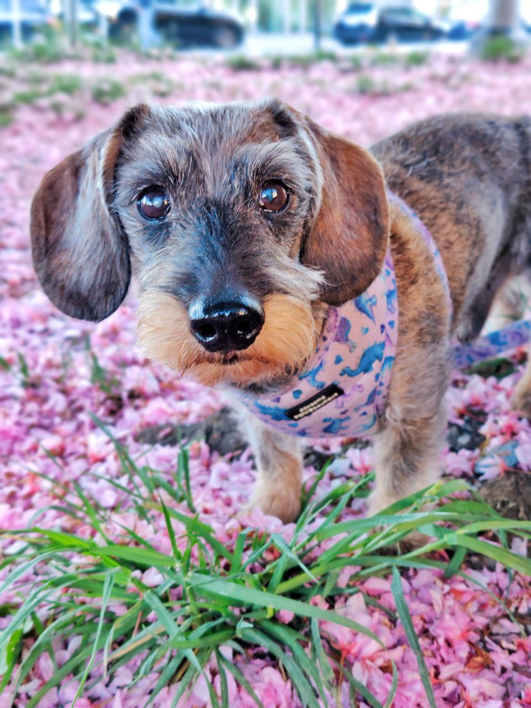

This page is dedicated to Bill, a dog that has shown resilience and
determination throughout his history.

Introducing Bill
Bill is a beloved dog who has been a loyal companion to his owner, Sara
Lindén, since 2011. He has a rich history and many achievements that
make him a special part of the family.
Bill's story is one of resilience and determination, as he has overcome
various challenges throughout his life. He has a playful spirit and a
heart full of love, making him a cherished member of the household.
Key Achievements
Born in 2011, Bill has been a loyal companion for over 14 years
Multiple Super Bowl appearances - appears just in time to eat a Super
Bowl of food
Won the hearts of many with his playful antics
Known for his unique ability to find the best spots in the house
Has a special talent for finding the coziest blankets
Participated in numerous charity events, raising awareness for animal
welfare through WWF
Trained to perform various tricks, including standing on his back paws
like a meercat and playing dead
Always ready to cheer up his owner with a wagging tail
Peed on every thing he could find - mostly outside...
Strong mental support to his owner
Bills Dream Vacation Destination
Bill dreams of visiting the beautiful beaches of Hawaii, where he can
run freely on the sand and play in the waves.
Taking slow walks with an occational sprint or two
Snuggling with his owner on the couch
Participating in dog-friendly events and meetups
Enjoying treats and snacks from his favorite pet store
Bills Ancestor - Buffalo Bill
Buffalo Bill, Bill's legendary ancestor, was known for his adventurous
spirit and remarkable achievements in the American West. His legacy
inspires Bill to be courageous and loyal every day.
For more information about Bill's ancestor - Buffalo Bill, visit the
official
Buffalo Bill website.